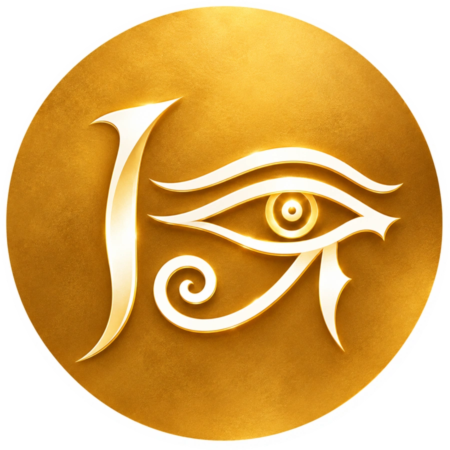
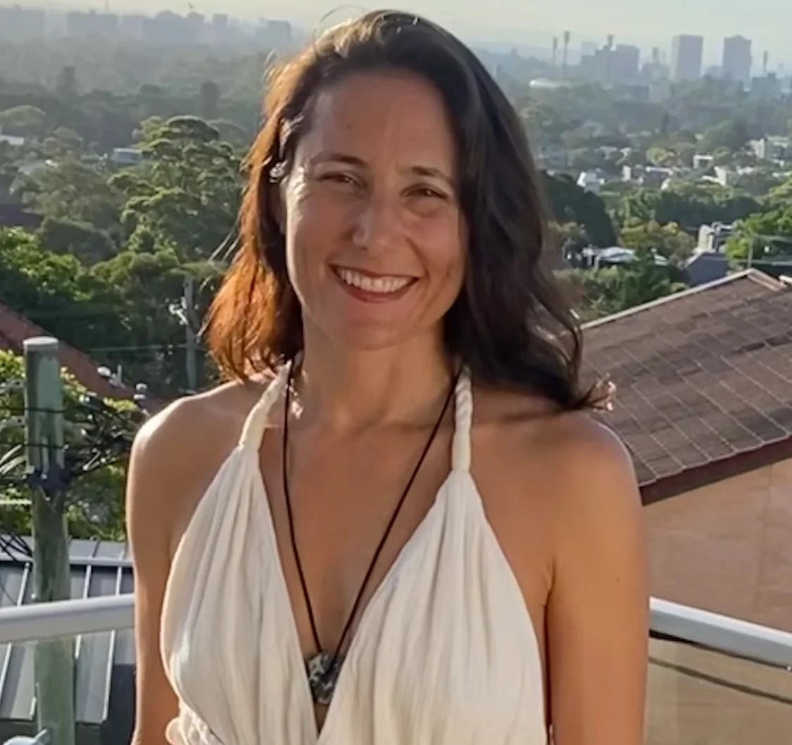
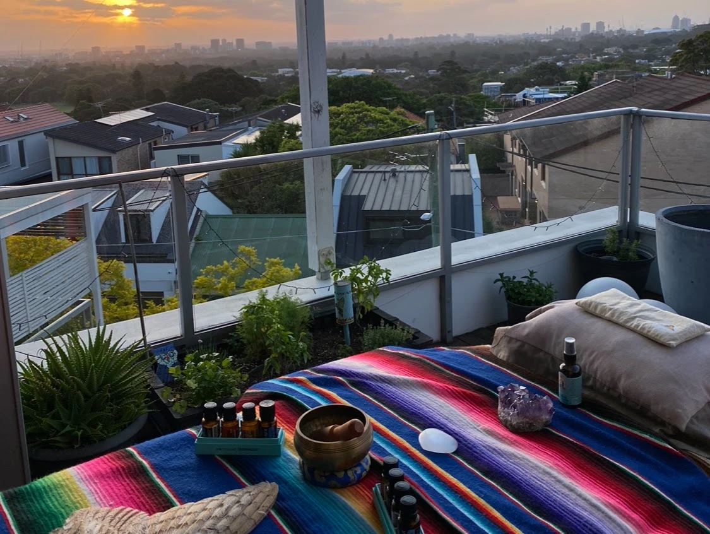
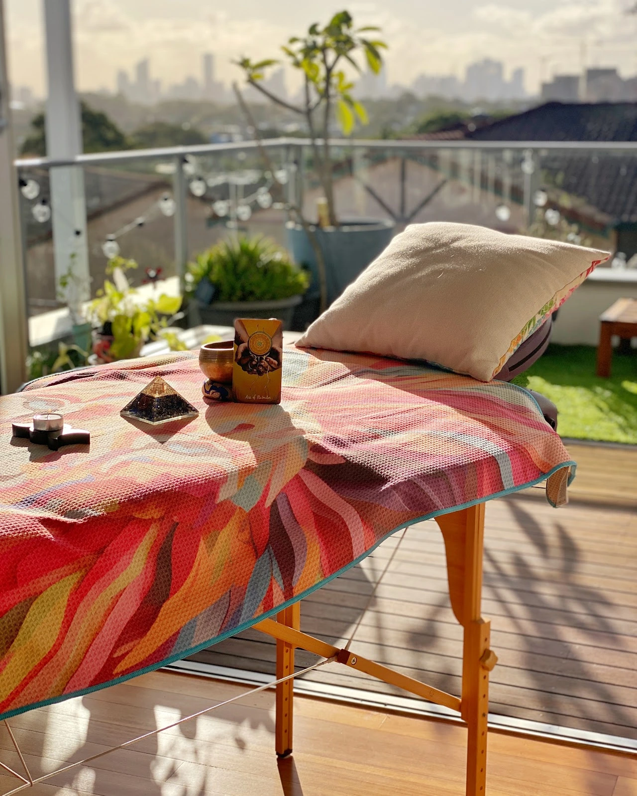

Ira Light - Holistic Spiritual Energy Healing Therapist

Ira brings together Reiki Light Language, Tarot & Oracle Life Mapping and grounding meditation in a personalised space for relaxation, reflection and spiritual exploration. Her Queens Park base makes her a local option for Sydney’s Eastern Suburbs, with online sessions also described on her official website.
Rather than prescribing the same experience to everyone, Ira’s approach begins with your intentions—whether you want a quiet reset, a reflective conversation around a life transition or time to reconnect with yourself. No particular sensation or outcome is promised.
The approach
- Reiki Light Language
- Tarot & Oracle Life Mapping
- Grounding meditation
- doTERRA AromaTouch (women, in person)
In-person Queens Park and online options are described on the official site. Ask about session suitability, your preferences and a free 15-minute discovery call before booking.
 Google-profile photograph ↗
Google-profile photograph ↗



From Google reviews
“What I appreciated most was her kindness and genuine care, especially the way she follows up after sessions to make sure everything is settling well.”
Dalia Amihoud · Google review ↗
“I tried the Foundational Energy Healing Session with Ira, a beautiful mix of tarot therapy, Reiki and Light Language.”
Sophie Lorre · Google review ↗
“I was recently fortunate enough to experience a guided meditation from Ira Light. It took me through an expansive journey and was both grounding and energising. She also included reiki healing. Highly recommend!”
Melissa Siniawski · Google review ↗
“From the very beginning, her soothing, gentle voice created an immediate sense of safety and calm — it felt so easy to relax and trust the process.”
Kat Dol · Google review ↗
“I love Ira’s work! My experience was profound. I felt my energy become incredibly expansive. I had some tears of joy, I had some visions of who I understood to be my guardians. It was a beautiful experience.”
Sophie Alize · Google review ↗
“As soon as I entered, I was made to feel incredibly welcomed and comfortable. As we progressed through the session, I let my emotions out.”
Greg Urand · Google review ↗